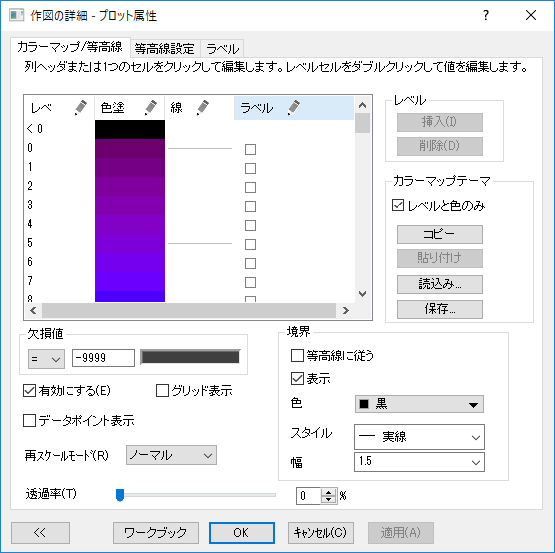
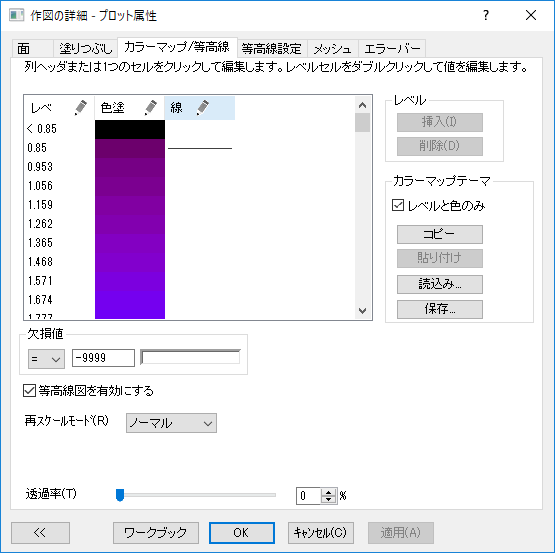
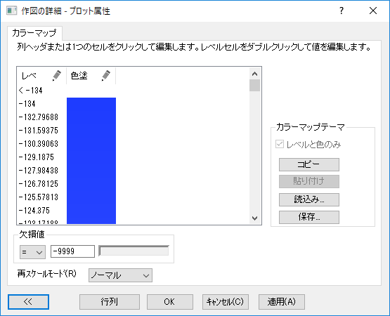
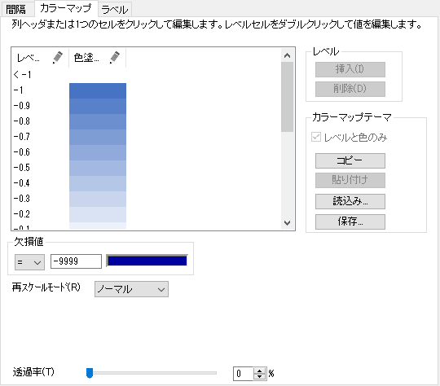

関連する動画は等高線とカラーマップをご覧ください。
関連する動画は等高線とカラーマップをご覧ください。
 関連する動画は等高線とカラーマップをご覧ください。
関連する動画は等高線とカラーマップをご覧ください。
色付き曲面図、等高線図、イメージプロット、カラーインデックスを使った2Dプロットの作図の詳細ダイアログには、すべてカラーマップタブ(等高線図はカラーマップ/等高線タブ)があります。これは、レベル、塗りつぶしの色、等高線、等高線ラベル、塗りつぶしの方法を編集するオプションを提供します。
| 等高線図 | 3D曲面 |
|  |  |
| イメージ | ヒートマップ |
|  |  |
| レベル |
Originは、行列ベースのグラフ(Z値)またはワークシートベースのグラフ(列値のインデックス)でプロットした最小値と最大値を検索して、8色レベルを作成するための増分を計算し、レベルのデフォルトセットを表示します。 最小値より小さい値および最大値より大きい値を表すための2つのレベルが追加されます。 個々の値はダブルクリックして、リストで編集することができます。 また、右側のパネルで、レベルヘッダをクリックし、レベルの設定ダイアログを開きます。そして、レベルをグループとして編集できます。 レベルは上記のグラフタイプすべてで利用できます。 | |
|---|---|---|
| 塗りつぶし |
Originは、デフォルトで、赤と青の間に黄色と緑を導入したカラーリストを使います。個々の色と塗りつぶしパターンをクリックしてリスト内で編集するか、色塗りヘッダをクリックして、塗り方ダイアログを開いて、グループとして色塗りの方法と属性を編集できます。 色塗りは上記のグラフタイプすべてで利用できます。
| |
| 線 |
カラーマップの各レベルで等高線ラベルを表示できます。個々の線は、線列内の行をクリックして、オンオフしたり、編集できます。または、線ヘッダをクリックして、等高線ダイアログを開くと、グループとして線の属性を編集することもできます。 線は、等高線図でのみ利用できます。
| |
| ラベル |
カラーマップの各レベルで等高線ラベルを表示できます。個々のラベルはラベル列の行にあるチェックボックスにチェックを付けて表示したり、ラベルヘッダをクリックして、等高線ラベルダイアログを開いて、グループとしてのラベルの表示/非表示を編集することができます。 ラベルは、等高線図でのみ利用できます。
|
作図の詳細ダイアログの「カラーマップ/等高線」タブで、レベル....の列にあるセルのいずれかをダブルクリックして、レベルの値を直接入力して変更します。 値は、前のレベルと次のレベルの間の値にする必要があります。
または、
最大または最小レベルを編集するには
または、
さらに、レベル間の間隔を設定したり、主レベルと副レベルの値を設定して手動でレベル数を指定することができます。
開始レベルを設定して最初の主レベルの値を指定できます。
全範囲のデータに色を設定するには、色塗りヘッダをクリックします。塗り方ダイアログで,色やパターンの生成方法を選択します（詳細は下の色補間による塗り色の生成で紹介します）。
塗り色がパレットまたはカラーリストにリンクされている場合、色の列で個々の塗り色をクリックして編集することはできません（塗り方ダイアログが開き、コントロールが淡色表示されます）。
等高線図
|
3D曲面
|
|---|
| 制限付き混合 | このラジオボタンを選択すると、最小値(開始)レベルと最大値(終了)レベルの塗り色を選択し、その間を2色の線形的に混ぜ合わされた混合色で塗り分けます。 |
|---|---|
| 3色制限付き混合 | このオプションでは、塗りつぶしの初期値(開始)、中間値(中央)と終了値(終了)を設定し、範囲内のセルを3色のグラデーションで塗りつぶします。
さらに、中央の位置を以下のように決定します。
|
| 他の色を導入して混合 | このラジオボタンを選択すると、Originが自動的に補色を導入して混合色を作成します。 このオプションでは、｢制限付き混合｣オプションの色味と比べてよりはっきりした塗り分けができます。 |
| パレットをロード | パレットをロードし、塗りつぶし色として適用します。パレットの選択ボタンをクリックして、40種類の組み込みパレットから1つのパレットを選びます。さらに、パレットのリストからさらに他のパレット... をクリックしてユーザ定義のパレットを開くことができます。
|
| カラーリスト | カラーリストをロードし、色の塗りつぶしとして適用します。カラーリストを選択ボタンをクリックして、デフォルトやユーザ定義カラーリストを選ぶことができます。
|
| 開始 | これは、制限付き混合、3色制限付き混合または他の色を導入して混合のどれかが選択されている場合に利用できます。これを使って最小レベルの色を指定します。 |
| 中間 | これは、3色制限付き混合が選択されている場合のみ有効です。これを使って中間レベルの色を指定します。 |
| 終了 | これは、制限付き混合、3色制限付き混合または他の色を導入して混合のどれかが選択されている場合に利用できます。これを使って最大レベルの色を指定します。 |
読み取り専用の範囲グループには、現在のダイアログボックスで設定できるレベルの範囲が表示されます。 範囲を指定するには、ダイアログボックスをいったん閉じて、カラーマップ/等高線タブのレベル列から範囲を選択しなおします。
レベル全体を編集するには、レベル列で1つ以上のレベルを選択しないように注意してください。
推移パターンを使用するにチェックを入れます
推移パターンを使用するのチェックを外します
線の列にある行をクリックして、線ダイアログを開きます。
表示するチェックボックスにチェックまたはチェックを外し、線を表示または非表示にすることができます。チェックを付けると、線の色、線種、太さを編集できます。
| Note: 線が主レベル上のみ表示に設定されている場合、個々の線は主レベル上のものを除いて、編集できません。個別のレベルで線を表示/非表示するには、線ヘッダをクリックし、等高線ダイアログで主レベル上のみ表示のチェックを外します。 |
または、
そして、等高線ダイアログで複数の等高線を編集します。
| 線の表示/非表示 | 等高線の全レベルの編集時にアクティブになります。
|
|---|---|
| 線図の属性 |
|
等高線のラベル付けを制御するには、ラベル列ヘッダをクリックして等高線ラベルダイアログを開きます。
ミニツールバーの等高線ラベルを表示ボタン |
主レベル上のみ表示のチェックを外した場合、カラーマップ/等高線タブのラベル列ボックスにチェックを付けて、そのレベルに個別でラベルを付けることができます。
|
Note: 等高線図に個々のラベルを追加するには、CTRL + SHIFTを押してながら等高線を正確にクリックします。次に、選択した等高線を右クリックして、 等高線ラベルの付加 を選択します。付加した等高線ラベルをドラッグして、位置を調整できます。 |
このグループのボタンを使ってレベルを挿入または削除できます。
レベルを挿入するには
レベルを削除するには
|
行列/XYZ曲面
|
上列等高線
|
XYZ等高線
|
|---|
行列/XYZ曲面の色塗りつぶし制御グループ
行列等高線図に対する色塗りつぶし制御グループ(仮想行列も含む)
等高線の塗りつぶしはセル値の線形補間を使用して等高線の位置を決定し、選択したカラースケール値を使用して不規則に描かれた等高線が色塗りされます。反対に、グリッド線の塗りつぶしは各行列セルを離散矩形として扱い、それぞれをカラースケール値に対応した色で塗ります。それぞれの有用性があり、使用に適しているかどうかを判断する必要があります。
| Note: Originのヒートマップグラフは、グリッド線の塗りつぶし設定を使用しています。この設定では、各行列セルに対して選択されたカラースケールからの色が割り当てられます。さらに、セルまたは「ブロック」は目盛の中央に位置します。したがって、10 × 10の行列から作成された等高線図は、1から10の軸スケール値を使用しますが、同じ行列から作成されたヒートマップは0.5から10.5のスケール値を持ちます。 |
XYZ等高線図の色塗りつぶし制御グループ
| Note:
色階調の制御グループは、イメージプロットまたはカラーインデックスを使った2Dプロットでは利用できません。 |
欠損値グループでは、行列の欠損値のしきい値を指定できるほか、しきい値に従って値を解釈する方法を指定できます。ドロップダウンリストで演算子を選択して、しきい値より大きい/小さい/等しい値を欠損値として指定できます。これは、行列で -- として表示される Originの欠損値に追加されます。
次に、色ボックスをクリックして、これらの欠損値の色を指定できます。
グループ内のボタンを使って、カラーマップ表で指定した設定をコピーまたは保存/読み込みできます。
このボタングループは、レベル、色塗り、等高線、ラベルを含むカラーマップ表で指定したすべての設定をコピーまたは保存します。レベルと色のみを含めるにチェックし、レベル と色塗りのみの設定をコピー/保存します。
あるプロットのカラーマップ設定を他のプロットにコピーするには
カラーマップの設定をグラフテーマとして保存するには
カラーマップの設定で既存のグラフテーマを使用するには
この設定グループは行列およびXYZデータから作成された等高線図で利用でき、等高線の編集操作を行います。XYZ等高線図の場合、等高線情報タブで境界が定義されますが、行列等高線図の場合は、データ境界が使用されます。
| 等高線に従う |
チェックを付けると、境界線は等高線図の線のスタイルと同じになります。チェックを外した場合は、境界線のスタイルを個別編集でき、下のオプションが利用可能になります。 |
|---|---|
| 表示 |
等高線図の境界線を表示するか指定します。このチェックボックスが選択されると、その下オプションを利用可能になります。 |
| 色 |
境界線の色を指定します。 |
| 線種 |
ドロップダウンリストから線の種類を指定します。 |
| 幅 |
値を直接入力するか、ドロップダウンから選択して、線の太さを指定します。 |
再スケールモードドロップダウンリストは、現在の値が変わったときに、カラーマップまたはカラーマップ/等高線タブで設定したレベルを更新するかどうかを制御します。
| ノーマル |
Originがデータ セット内の最小値と最大値を自動で検出し、均等なサイズのレベルとそれに対応する色を作成します。 |
|---|---|
| 手動 |
カラーマップ/等高線タブで設定された色レベルと色が維持されます。これは、データセットの範囲に影響されません。 このモードでレベルや色を修正するには、レベルと色の制御を編集しなければなりません。 |
| 開始固定 |
データセットの値に関係なく、最小のレベルは変更されません。 |
| 終了固定 |
データセットの値に関係なく、最大のレベルは変更されません。 |
| 自動 |
データ範囲が変更したら自動で色レベルと色塗りを再スケールします。 |
カラーマップ塗りつぶし領域（等高線図、イメージ、ヒートマップ、曲面）の透過率を指定するには、このコンビネーションボックスに直接整数(1から100)を入力するか、スライダで値を決めます。
Note:0は透過せず、100は完全に透過する事を示しています。
ダイアログ下にあるワークブックボタン（行列から作図されている場合は行列ボタン）をクリックすると、グラフを作図ているワークブック/行列データが開きます。仮想行列から作図されたグラフの場合、ワークブックボタンをクリックすると、対応する仮想行列が選択された状態の仮想行列マネージャを開くことができます。